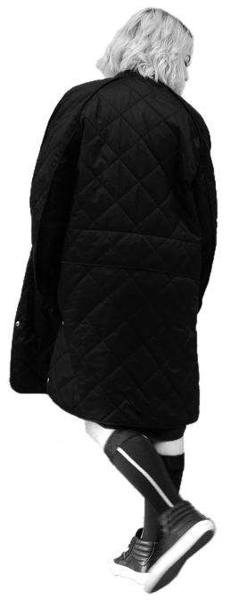
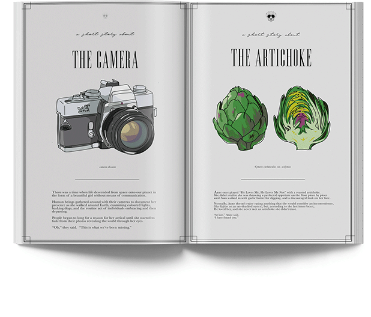

KDJFL SJKF dfja sjdflsd fas fkajsfd alsdfjlkasjf sdf klasjf askj fklaj fa KDJFL SJKF dfja sjdflsd fas fkajsfd alsdfjlkasjf sdf klasjf askj fklaj fa KDJFL SJKF dfja sjdflsd fas fkajsfd alsdfjlkasjf sdf klasjf askj fklaj fa KDJFL SJKF dfja sjdflsd fas fkajsfd alsdfjlkasjf sdf klasjf askj fklaj fa KDJFL SJKF dfja sjdflsd fas fkajsfd alsdfjlkasjf sdf klasjf askj fklaj fa KDJFL SJKF dfja sjdflsd fas fkajsfd alsdfjlkasjf sdf klasjf askj fklaj fa
editorial


illustration
